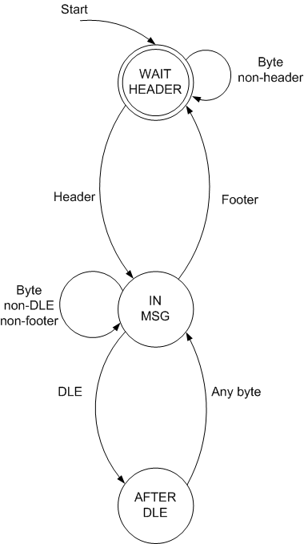

Observation:
Co-routines are to state machines what recursion is to stacks
When you have to traverse some sort of a nested data structure (say, a binary tree), one approach is to create a stack that remembers where in the tree you are. Another, much more elegant approach, is to write the function recursively. A recursive function employs the machine stack used to implicitly implement function calls - you get the benefits of the stack without paying the cost of reduced readability.
In this article I'll try to show, using a simple, yet very realistic example why co-routines do the same to state machines.
The problem - serial framing
I've written a detailed article about framing earlier this month. The simple summary is: we have an endless incoming stream of bytes, from which we need to deduce structured data frames. That is, we have to find where a frame starts, where it ends and what is the data it carries. For this purpose we use a special header value, footer value and an escape byte (DLE).
A complete Python implementation is described here, but in this article I will present the solution in a simplified manner, keeping all irrelevant details out.
The state machine
Given a stream and receiving one byte at a time, here is the state machine that describes the framing process:
Only inputs and state transitions are shown. The framing process outputs complete frames when moving from the IN_MSG state to the WAIT_HEADER stage (this happens when a footer is received) [1]
Implementing the state machine
Here's an implementation of this state machine in Python. The internal state is kept in an object:
class ProtocolWrapper(object):
def __init__(self,
header='\x61',
footer='\x62',
dle='\xAB',
after_dle_func=lambda x: x):
self.header = header
self.footer = footer
self.dle = dle
self.after_dle_func = after_dle_func
self.state = self.WAIT_HEADER
self.frame = ''
# internal state
(WAIT_HEADER, IN_MSG, AFTER_DLE) = range(3)
def input(self, byte):
""" Receive a byte.
If this byte completes a frame, the
frame is returned. Otherwise, None
is returned.
"""
if self.state == self.WAIT_HEADER:
if byte == self.header:
self.state = self.IN_MSG
self.frame = ''
return None
elif self.state == self.IN_MSG:
if byte == self.footer:
self.state = self.WAIT_HEADER
return self.frame
elif byte == self.dle:
self.state = self.AFTER_DLE
else:
self.frame += byte
return None
elif self.state == self.AFTER_DLE:
self.frame += self.after_dle_func(byte)
self.state = self.IN_MSG
return None
else:
raise AssertionError()
Note that the code of the input method closely follows the state diagram. This is how implementations of state machines are - it's generally difficult to understand what's going on in the code without having some sort of a state diagram in front of your eyes. In this case the state machine has just 3 states, but it can be easily 20 for more complex needs. Understanding such a state function with 20 states is impossible without a diagram.
Anyhow, here's some test code that simulates a stream of data with a couple of frames and invalid data in between:
bytes = ''.join(chr(b) for b in
[0x70, 0x24,
0x61, 0x99, 0xAF, 0xD1, 0x62,
0x56, 0x62,
0x61, 0xAB, 0xAB, 0x14, 0x62,
0x7
])
pw = ProtocolWrapper()
for byte in bytes:
frame = pw.input(byte)
if frame:
print 'Got frame:', frame.encode('hex')
This prints:
Got frame: 99afd1
Got frame: ab14
Co-routines
I don't intend to teach the theory behind co-routines here, and I'll assume at least a basic familiarity with the concept. My goal is to show a real-life, relevant example that demonstrates how co-routines relate to state machines.
This link is a good tutorial on co-routines (in C, of all languages), and there's of course Wikipedia and C2. But the absolutely best tutorial, with focus on Python, is David Beazley's presentation from this year's PyCon: A curious course on coroutines and concurrency. It is while reading this tutorial that the connection finally 'clicked' in my head. It is most highly recommended [2].
If there's one description of co-routines you should remember while reading this article and later, it is that co-routines save the control state of a function between calls. Kinda like recursion - you know exactly where are you going to return after a function call.
When you call a co-routine, it doesn't start all over from the beginning. Rather, it starts from right after where it returned (yielded control) the previous time it was called.
This also explains why co-routines can replace state machines. The input method of ProtocolWrapper is invoked multiple times. Since it's a "normal" function, it begins running from its first line for each invocation. This is why it needs to keep a state machine - to know it's current "place in the world" when the next byte is received. With co-routines this isn't necessary - co-routines start exactly where they stopped the previous time they were called - so no state keeping is required!
Using co-routines for framing
Without further ado, here is the co-routine implementation of the framing problem:
@coroutine
def unwrap_protocol(header='\x61',
footer='\x62',
dle='\xAB',
after_dle_func=lambda x: x,
target=None):
""" Simplified framing (protocol unwrapping)
co-routine.
"""
# Outer loop looking for a frame header
#
while True:
byte = (yield)
frame = ''
if byte == header:
# Capture the full frame
#
while True:
byte = (yield)
if byte == footer:
target.send(frame)
break
elif byte == dle:
byte = (yield)
frame += after_dle_func(byte)
else:
frame += byte
Look how simple and elegant it is. You can tell immediately what it does just by looking at the source code - no state diagrams are needed.
We loop over frames. A frame starts with a header byte. After a header byte has been received, we accumulate the bytes of the frame until a footer is encountered. The (yield) calls is where the magic is. The function suspends at these points until it is called again [3]. Then, the value passed in the new call is returned from (yield) and the co-routine proceeds from the same place.
Note how the state machine is implicitly embedded in this code. It's there, but you don't see it - it's hiding in the control structures (the IFs, ELSEs and the WHILEs) of the function.
When a complete frame is received, it is sent to the target of the co-routine, which may process it at will. After executing send, the co-routine breaks out of the inner loop and suspends waiting for a new header in the outer loop.
The @coroutine decorator is a simple utility required for Python co-routines:
def coroutine(func):
def start(*args,**kwargs):
cr = func(*args,**kwargs)
cr.next()
return cr
return start
This is needed to bring a co-routine to its first yield and suspend there. You can just use this decorator without worrying about the details, until you become more comfortable with the concept to understand the exact inner workings described in PEP 342.
To test this co-routine implementation we also need a simple "sink" co-routine (using Dave Beazley's terminology from his presentation). This will be the receiver of the send calls made by our co-routine:
@coroutine
def frame_receiver():
""" A simple co-routine "sink" for receiving
full frames.
"""
while True:
frame = (yield)
print 'Got frame:', frame.encode('hex')
bytes = ''.join(chr(b) for b in
[0x70, 0x24,
0x61, 0x99, 0xAF, 0xD1, 0x62,
0x56, 0x62,
0x61, 0xAB, 0xAB, 0x14, 0x62,
0x7
])
unwrapper = unwrap_protocol(
target=frame_receiver())
for byte in bytes:
unwrapper.send(byte)
Prints:
Got frame: 99afd1
Got frame: ab14
Conclusion
I'll repeat the quote from the beginning of the article:
Co-routines are to state machines what recursion is to stacks
Recursion helps process nested data structures without employing explicit stacks.
Similarly, co-routines help solve problems involving state, without using explicit state machines. The resulting code is not centered on the states, but rather on the logic of the tasks, which makes it much simpler to understand.
Co-routines are a useful tool to have in one's toolbox. It is worthwhile to spend some time getting acquainted with them.

| [1] | Such a state machine is called a Mealy machine - it generates output based on the current state and input. Most state machines implemented in software are of this type. |
| [2] | For Python there's also PEP 342 - but I recommend going over it only after you've read Dave's tutorial. |
| [3] | Technically, a co-routine is created once by calling it. Then, we have a "co-routine object" on which we can execute send methods, passing the arguments to yield via send. This is how co-routines are implemented in Python. It might look different in another language, but the concept stays the same. |